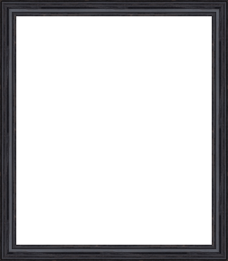
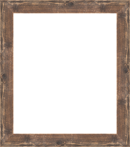
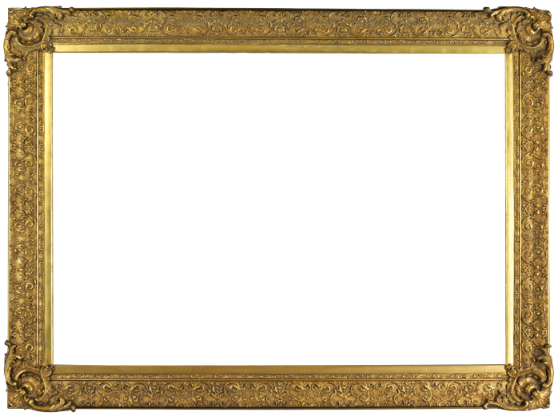

Hey Grandma!
Instructions
- Click on one of the frames below
- The frame will be adjustable, so adjust it however you'd like
- Upload your picture
- The picture will be adjustable, so adjust it however you'd like
- Then download
Upload Your File!
Chose a Frame!




Download your stuff!